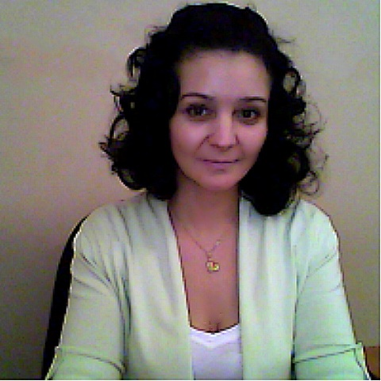

Сотрудники
Сотрудники Расписание
Расписание Сайт РГГМУ
Сайт РГГМУ| Федорова Наталия Юрьевна |  |
Куваева Ольга Владимировна |  |
| Кандидат педагогических наук (Специальность 13.00.02 – Теория и методика обучения и воспитания (иностранные языки)), зав. кафедрой. Образование 1. Санкт-Петербургский государственный электротехнический университет (ЛЭТИ), специальность «Электротехнические установки». 2. Cambridge Certificate of Proficiency in English (Кэмбриджский сертификат совершенного владения языком). 3. СПбГУ, курсы переподготовки преподавателей по специальности «Филология и лингвострановедение». 4. СПбГУ, аспирантура, 13.00.02 – Теория и методика обучения и воспитания (иностранные языки). Сфера научных интересов. Методика преподавания профессионально ориентированного иностранного языка; принципы разработки учебных программ и пособий по иностранному языку для студентов вузов. |
Специалист по учебно-методической работе. | ||
| Игнатьева Наталья Валерьевна |  |
Митина Юлия Валерьевна | |
старший преподаватель Образование 1. РГГМУ, экономический факультет, специалитет 2. РГГМУ, филологический факультет, магистратура Сфера научных интересов. Методика преподавания иностранных языков магистрам гидрометеорологических специальностей, интерактивые методики преподавания иностранных языков, терминология в области наук о Земле. |
доцент кафедры иностранных языков Образование 1. РГГМУ, океанологический факультет, специалитет 2. РГГМУ, океанологический факультет, аспирантура 3. РГГМУ, филологический факультет, магистратура Сфера научных интересов. Методика преподавания иностранных языков магистрам гидрометеорологических специальностей, интерактивные методы преподавания иностранных языков, терминология в области наук о Земле. |
||
| Седунова Ольга Юрьевна | |
Дорошкевич Ирина Сергеевна |  |
старший преподаватель Образование РГПУ им. А.И.Герцена, факультет физики, специализация "Физика и филология", учитель физики и учитель английского языка. Сфера научных интересов. Использование ИКТ для обучения и повышения успеваемости студентов и магистрантов ВУЗов. |
старший преподаватель Образование 1. СПбГУ, факультет социологии, специалитет 2. ЕУ СПб, факультет антропологии, магистратура 3. РГПУ им. Герцена, доп. проф. программа проф. переподготовки «Переводчик в сфере профессиональной коммуникации» Сфера научных интересов. Профессионально-ориентированное обучение иностранному языку, интерактивные методы обучения |
||
| Медко | |
||
Сотрудники